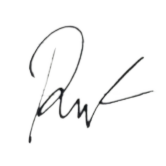

Hi, I'm Odi aka Raynold Lubis
Computer Science Graduate with hands-on experience in developing web and mobile applications. Successfully completed projects with high scores and implemented efficient solutions. Experienced Web Developer with 1 year of employment developing Wordpress sites, achieving a 27% reduction in design errors and improving mobile usability by 30%.
Proficient in HTML5, CSS3, JavaScript, and Java. Skilled in effective communication, leadership, and collaboration within project teams. I'm seeking a role where I can apply my skills and contribute to the development of innovative solutions. Let's connect and discuss how I can add value to your team! 
Bachelor of Computer Science : Petra Christian University
Projects
- Developed and implemented thesis project on "Online Patient Registration Application and Electronic Medical Records at Independent General Practitioner Practices", resulting in a 93.75% improvement in efficiency for the patient registration process
- Developed Absent Scanner UI/UX project for mobile and web, resulting in a score rating of 75.5%
- Developed My Coffee UI/UX project for mobile, resulting in a score rating of 85.5%
- Developed Java-based Chat Application for PC, resulting in a perfect score of 10/10 for the project
Lecture Activities
- Directed 100-166 guests to correct locations at parent meetings for new students, provided knowledgeable responses to inquiries, offered friendly greetings to all attendees, and collaborated closely with team members to develop effective solutions
- Earned 3 course completion certificates and a letter of merit from Cisco Networking Academy
- Taught website creation using wix.com to senior high school students, positively impacting over 20 students
- Participated in 4 knowledge-expanding seminars, including discussions on Kartini Day, Success in the Creative Industry, National Invasion, and Enterprise Resource Planning, gaining valuable insights and industry knowledge
- Participated in 6 basketball competitions ranging from faculty to university level, resulting in 2 championship wins at the faculty level
Experiences
Internship
> Web Developer Internship : PT Bangun Indopralon Sukses
Projects
Volunteering
> Event Coordinator & Technical Lead : High School Reunion
> Moderator : NBA 2K Indonesia Discord Community
Organizations
Skills
Hard Skills
HTML5 & CSS3, JavaScript, Database, PHP, Java, Microsoft Office, Adobe Photoshop
Soft Skills
Communication, Teamwork, Problem Solving, Analytical Skills, Critical Thinking
Certifications
> General Occupational Safety & Health Expert : Badan Nasional Sertifikasi Profesi (BNSP)
> Intro to Data Analytics : RevoU
> Fullstack Mini Bootcamp : Coding.ID
> CyberOps Associate : Cisco Networking Academy
> Programming Essentials in Python : Cisco Networking Academy
Awards
Infor - SIB Competition Juara 1 Basket : Himpunan Mahasiswa Informatika Universitas Kristen Petra
Informatika SIB League Juara 1 Basket : Himpunan Mahasiswa Informatika Universitas Kristen Petra